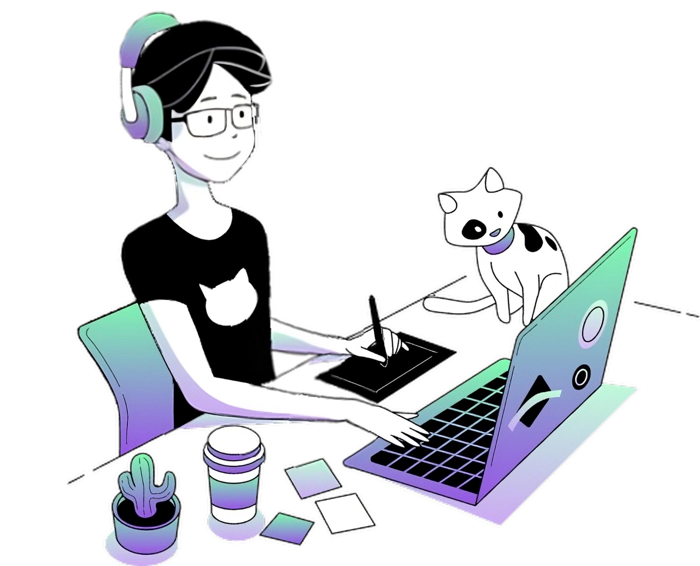

<div class="container" id="about">
  <div class="wrapper">
    <div class="img-container">
      
    </div>

    <div class="text-container">
      <div class="icons">
        
        
      </div>
      <span>About me</span>
      <h1>
        I’m a passionate software developer looking for my first international
        oppotunity
      </h1>
      <p>
        Beyond coding, I'm a coffee enthusiast, a cat lover, and a self-taught
        artist who enjoys spending my free time doodling. I am currently seeking
        opportunities to bring my skills and enthusiasm to a tech company in the
        United States or Europe and am excited about the prospect of relocating
        to pursue new challenges.
      </p>
      <div class="button-container">
        <button
          (click)="
            goToUrl(
              'https://www.dropbox.com/scl/fi/cj2dnezs1zj5pfwyeugwb/Curr-culo-Jos-Lucas.pdf?rlkey=eqysy7dm4v4xjq3plm89fkjq3&dl=0'
            )
          "
        >
          
          My resume
        </button>
      </div>
    </div>
  </div>
</div>
